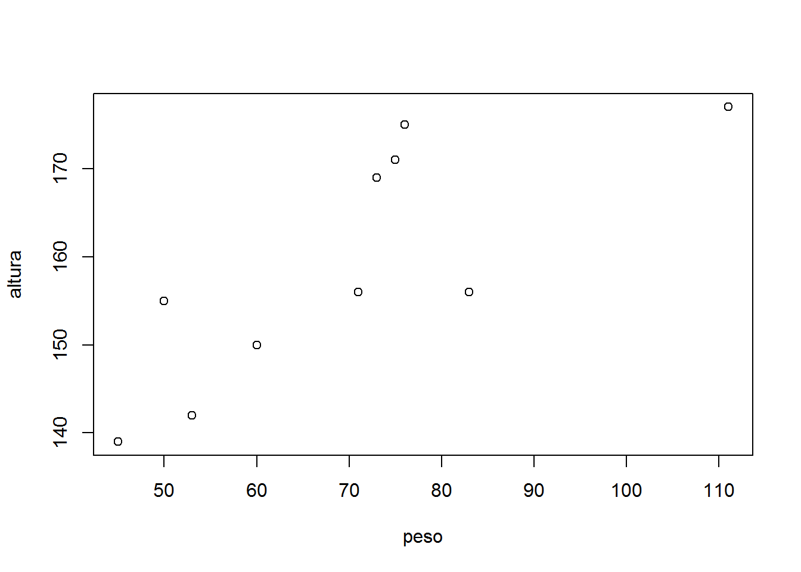
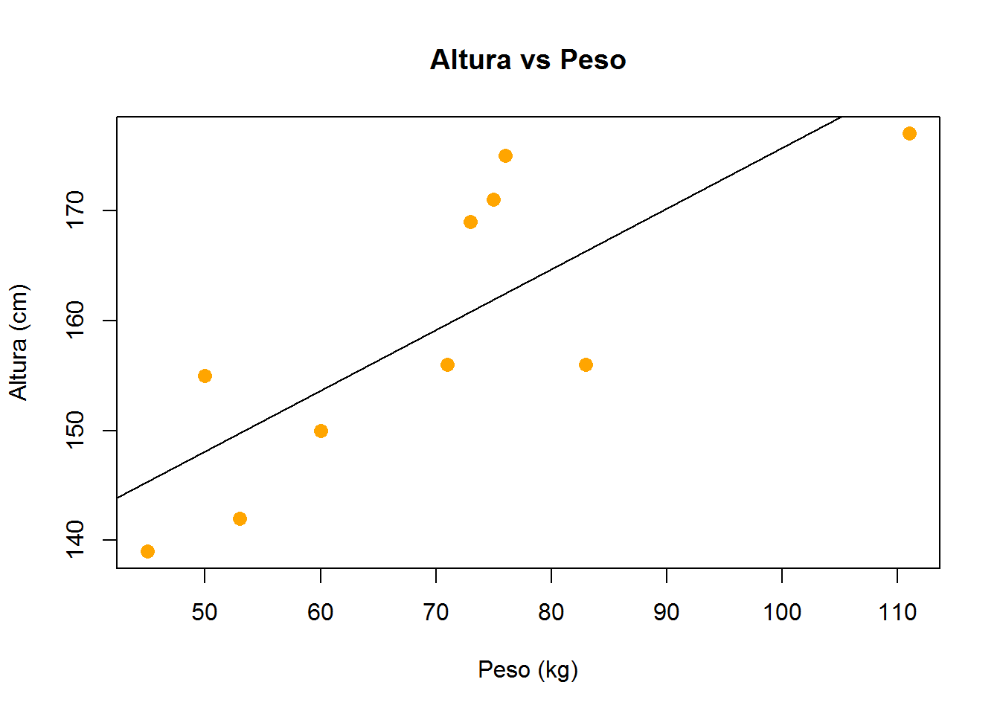
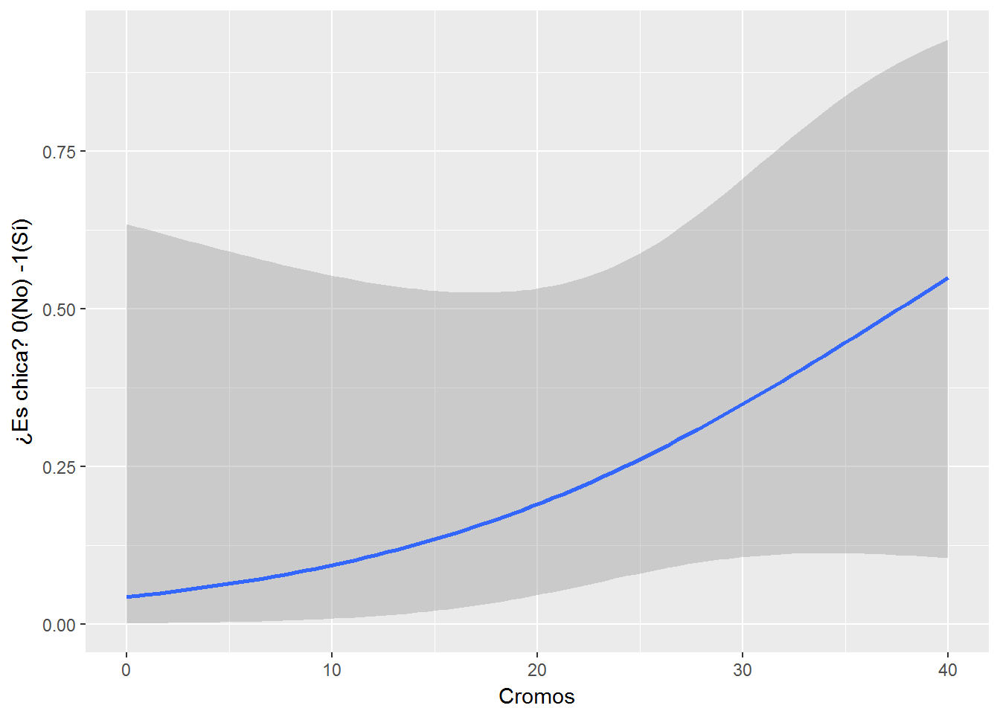
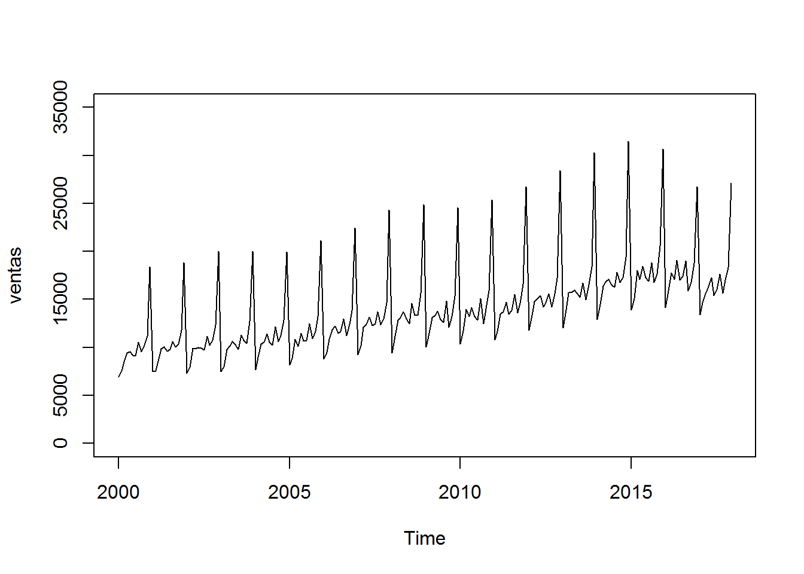
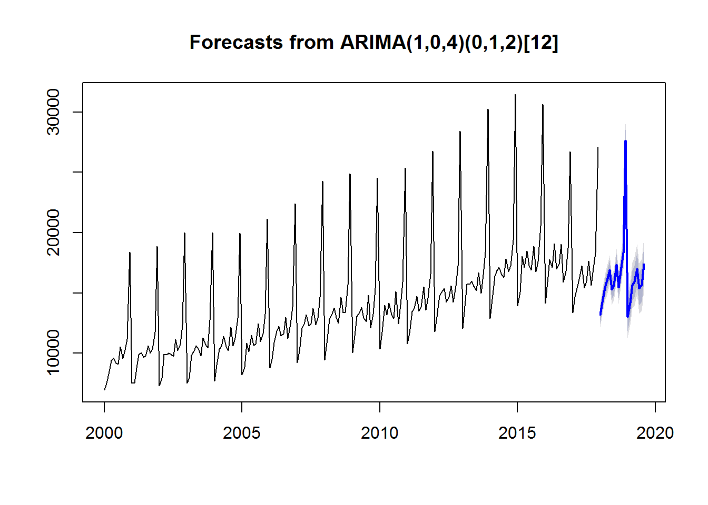

Capítulo 4 R para Predecir
“The problem with experts is that they don’t know what they don’t know….”
— Nassim Taleb
Con R es también sencillo aplicar modelos de regresión y correlación a nuestros datos, modelos estadísticos predictivos, etc.
4.1 Correlación
No hemos comentado todavía que en el repositorio de R existen varios datasets de ejemplo con los que podemos trabajar y que podemos invocar con sólo llamarlos por su nombre. Uno de ellos es mtcars. Se trata de una base de datos de modelos de coches y sus distintas prestaciones o características técnicas expresadas como variables.
Echémosle un vistazo:
## mpg cyl disp hp drat wt qsec vs am gear carb
## Mazda RX4 21.0 6 160 110 3.90 2.620 16.46 0 1 4 4
## Mazda RX4 Wag 21.0 6 160 110 3.90 2.875 17.02 0 1 4 4
## Datsun 710 22.8 4 108 93 3.85 2.320 18.61 1 1 4 1
## Hornet 4 Drive 21.4 6 258 110 3.08 3.215 19.44 1 0 3 1
## Hornet Sportabout 18.7 8 360 175 3.15 3.440 17.02 0 0 3 2
## Valiant 18.1 6 225 105 2.76 3.460 20.22 1 0 3 1Veamos,por ejemplo, con la ayuda de la función cor() si existen correlaciones entre las variables mpg (miles per galon), cyl (cilindrada), etc.:
# ponemos las variables mpg, cyl y disp como filas de una matriz:
x <- mtcars[1:3]
# y hp, drat y wt como columnas de la matriz:
y <- mtcars[4:6]
#la funcion cor() nos da la correlacion en cada caso:
cor(x, y)## hp drat wt
## mpg -0.7761684 0.6811719 -0.8676594
## cyl 0.8324475 -0.6999381 0.7824958
## disp 0.7909486 -0.7102139 0.8879799Valores cercanos a 1 indican correlación positiva, cercanos a -1 correlación negativa y cercanos a 0 poca correlación.
4.2 Regresión
Usamos regresión cuando tenemos un atributo X y queremos predecir una Respuesta o Variable de Salida Y, por ejemplo para saber cuanto mide alguien en función de cuanto pesa.
4.2.1 Regresión lineal
Si tenemos sólo una variable o atributo hablamos de Regresión Linear Simple. Cuando tenemos múltiples atributos (ej. x1, x2, x3,..) sería Regresión Linear Múltiple.
Se aplica la fórmula de la ecuación lineal: y = a + b * x y se trata de determinar los coeficientes a (determina dónde la línea intersecta con el eje Y) y b (pendiente de la línea).
Veamos este caso sencillo y tratemos de trazar la línea de regresión en base a alturas y pesos de una población de 10 personas:
altura <- c(156, 155, 142, 177, 139, 156, 171, 169, 150, 175)
peso <- c(83, 50, 53, 111, 45, 71, 75, 73, 60, 76)
plot(peso, altura)
plot(peso, altura, pch = 16, cex = 1.3, col = "orange",
main = "Altura vs Peso",
xlab = "Peso (kg)",
ylab = "Altura (cm)")
#modelo lineal
lm(altura ~ peso) ##
## Call:
## lm(formula = altura ~ peso)
##
## Coefficients:
## (Intercept) peso
## 120.5135 0.5522#vemos que el intercept es 120.5135 y el pendiente 0.5522.
#Entonces finalmente trazamos la linea que mejor se ajusta (linea de regresión)
#en nuestro plot:
abline(120.5135, 0.5522)
#o sino también podemos visualizar la linea de regresion con:
abline(lm(altura ~ peso))
4.2.2 Regresión logística
Otro tipo de regresión que nos es útil a menudo es la regresión logística. Se trata de un modelo de regresión dónde la variable dependiente es categórica. Por ejemplo: la probabilidad de Aprobar (SI o NO) un examen en función del número de horas estudiadas, o la determinación de si un mail es SPAM o no en función de varios atributos o variables independientes (p.ej. el número de palabras, si contiene imágenes, links, etc.).
El modelo estima, por tanto, la probabilidad de una respuesta binaria (categórica) en base a uno o más predictores (o variables independientes) mediante una función logística.
Probemos con un ejemplo tonto en base a nuestros datos: probabilidad de ser chica en función del número de cromos que tiene una persona.
library(tidyverse)
library(ggplot2)
misdatos <- misdatos %>%
#creo la variable Es_Chica
mutate(Es_chica = as.numeric(Sexo == "f"))
#uso geom_smooth para definir la curva de tendencia de la regresión logística
regresion_logistica <- ggplot(data = misdatos, aes(x = Cromos,y = Es_chica)) +
geom_smooth(method = "glm", method.args = list(family = "binomial")) +
ylab("¿Es chica? 0(No) -1(Sí)")
regresion_logistica
4.3 Proyectar (Forecast)
Veamos ahora otro caso; supongamos que hemos ido anotando desde el año 2000 en un archivo las ventas de cada mes de nuestro negocio. Estaria bien poder predecir cuáles van a ser las de los proximos meses.
Podemos usar el paquete Forecast (Hyndman et al. 2017) desarrollado y mantenido por Rob Hyndman, para aplicar modelos proyectivos conocidos (tales como el modelo ARIMA).
Lo haríamos del siguiente modo:
Leemos los datos a partir de nuestro archivo ventas.csv.
df <- read.csv("C:/.../ventas.csv")
Transformamos los datos en un objeto temporal (time series object) del tipo ts (indicamos que los datos son mensuales y que el periodo de inicio es Enero del 2000).
Mostramos los datos:
df <- read.csv("_bookdown_files/ventas.csv")
series <- ts(df, frequency = 12, start = c(2000,1))
print(series)## Jan Feb Mar Apr May Jun Jul Aug Sep Oct Nov
## 2000 6938 7524 8475 9401 9558 9182 9103 10513 9573 10254 11187
## 2001 7502 7524 8766 9867 10063 9635 9794 10628 10013 10346 11760
## 2002 7280 7902 9921 9869 10009 9893 9735 11157 10217 10730 12354
## 2003 7518 7961 9815 10168 10620 10301 9784 11264 10710 10439 12751
## 2004 7684 8991 10349 10570 11405 10554 10202 12134 10623 11250 12875
## 2005 8194 8835 10840 10131 11505 10654 10734 12461 10942 11635 13244
## 2006 8800 9499 10863 11825 12239 11451 11633 12971 11214 12384 13854
## 2007 9237 10171 12081 12386 13167 12280 12461 13734 12357 12948 14643
## 2008 9447 11170 12841 13124 13735 12953 12500 14610 13375 13369 15675
## 2009 10060 11450 13067 13362 13787 12935 12600 14818 12104 13218 15352
## 2010 10344 11730 13977 13195 14150 13210 12873 15113 12445 14006 15911
## 2011 10804 11662 13452 13691 14730 13496 13854 15522 13567 14601 16555
## 2012 11790 13344 14760 15058 15379 14237 14667 15588 14224 15570 17230
## 2013 12046 13878 15727 15708 15989 15559 15218 16697 14960 16509 18402
## 2014 12893 14474 16386 16848 17103 16505 16275 17832 16767 17253 19391
## 2015 13927 15077 18045 17096 18474 17289 16883 18850 16765 17614 20550
## 2016 14170 15877 17764 17098 19081 17006 17366 19038 15881 16791 18753
## 2017 13382 14681 15560 16334 17260 15429 16002 17650 15624 17046 18324
## Dec
## 2000 18395
## 2001 18851
## 2002 20016
## 2003 20002
## 2004 19944
## 2005 21118
## 2006 22418
## 2007 24286
## 2008 24875
## 2009 24534
## 2010 25350
## 2011 26760
## 2012 28406
## 2013 30276
## 2014 31462
## 2015 30635
## 2016 26718
## 2017 27110Ploteamos la serie temporal. Nos aseguramos que el eje y empieza por cero.

Generemos ahora una prevision para los próximos 20 periodos en base al modelo ARIMA. Lo hacemos en dos pasos:
1) creamos un modelo usando la función auto.arima del paquete forecast
2) generamos una proyección en base al modelo usando la función forecast
Representamos gráficamente la previsión:
## Loading required package: forecast
Referencias
Hyndman, Rob, Mitchell O’Hara-Wild, Christoph Bergmeir, Slava Razbash, and Earo Wang. 2017. Forecast: Forecasting Functions for Time Series and Linear Models. https://CRAN.R-project.org/package=forecast.